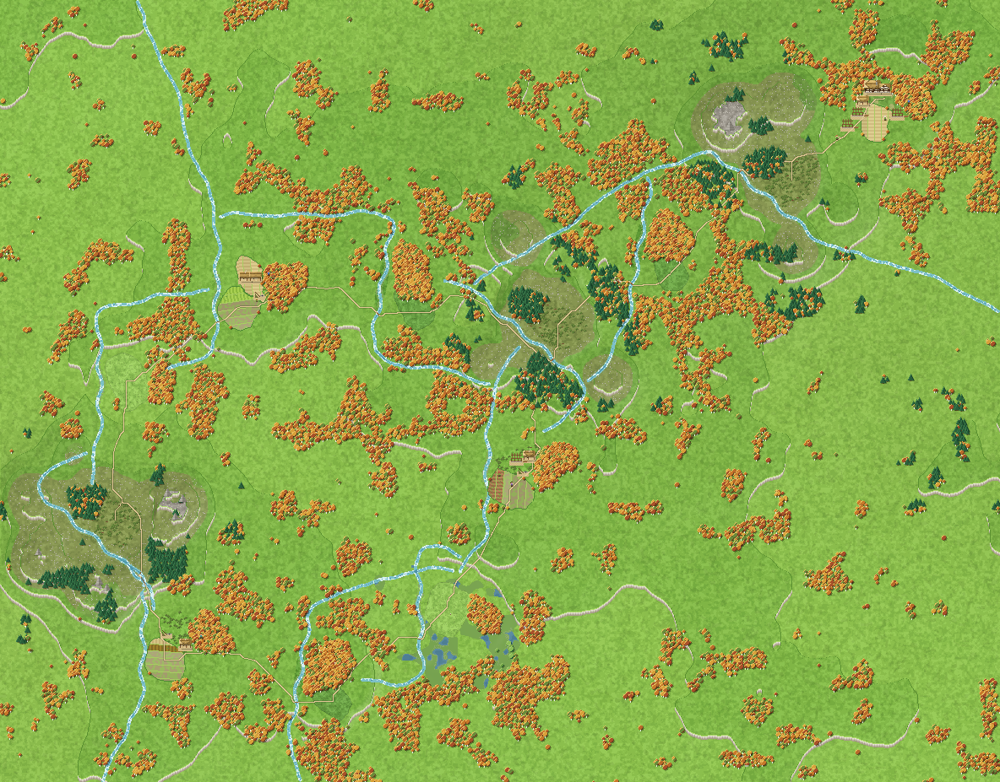

Each run is a world of places joined by roads. Agents act where they stand and see only where they are, so a society's shape is partly its map: who could reach whom, and how many days it took.
55 runs · Claude Opus, Sonnet and Haiku · every day rebuilt from the engine's journal

Hover for the places
Frontier camps, day 20 of 3812 places · 12 roads · red: people there today